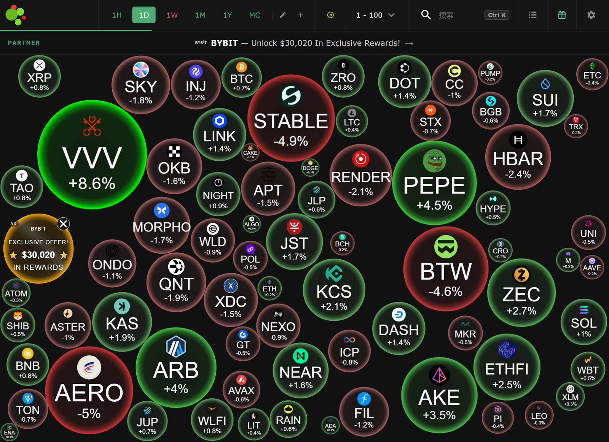

市场在短期是投票机，在长期是称重机。但当投票机突然转向时，重量就暴露了。
| 资产 | 最新 | 当日涨跌 | 备注 |
|---|---|---|---|
| 上证指数 | 3,689.91 | +0.10% | 11/5 收盘；成交约21,180亿，光伏涨停潮 |
| 深证成指 | 11,471.09 | +1.19% | 11/5 收盘；光伏/电池/电力设备领涨 |
| 创业板指 | 2,566.80 | +0.87% | 11/5 收盘；盘中一度涨超3%后回落 |
| 恒生指数 | 24,796.98 | +3.67% | 11/5 收盘；恒生科技+5.55% |
| 日经225 | 61,077.90 | -1.79% | 11/5 收盘；芯片股拖累 |
| 韩国KOSPI | 5,383.80 | -5.28% | 11/5 收盘；触发熔断，SK海力士-9.46% |
| 道琼斯 | ~52,041 | -2.42% | 11/5 收盘；选举狂欢仅持续一天 |
| 标普500 | ~7,415 | -3.55% | 11/5 收盘；科技股领跌 |
| 纳斯达克 | ~24,360 | -5.35% | 11/5 收盘；AI硬件链全面崩塌 |
| 费城半导体 | — | -10.14% | 11/5 收盘；恐慌性抛售，三倍做多半导体ETF-31.63% |
| VIX恐慌指数 | 27.03 | +62.73% | 11/5 收盘；创4月7日以来新高 |
| COMEX黄金 | ~$4,119.63/盎司 | +1.4% | 11/5 盘中；11/4收盘+3.34%至$4,072.20 |
| COMEX白银 | ~$52.2/盎司 | ↑ | 11/5 盘中续涨 |
| WTI原油 | $86.99/桶 | -1.19% | 11/5 收盘；布伦特$93.66（-0.88%） |
| 美10Y / 30Y国债 | ~4.84% / ~5.25% | — | 11/4 收盘4.843%；10Y约-4bp |
| 美元指数 / 离岸人民币 | ~101.34 / ~6.67 | ↓ | 11/5；美元-0.37% |
| BTC（加密风向标） | ~$80,500 | ~0% | 11/6 实时；CME期货$80,910（+0.54%） |
| 资产 | 最新 | 4H | 1D | 7D | 备注 |
|---|---|---|---|---|---|
| Bitcoin (BTC) | ~$80,500 | → ~0% | → ~0% | ↓ -1.0% | CME期货$80,910（+0.54%）；支撑$78,000，阻力$82,500；BTC占比≈59% |
| Ethereum (ETH) | ~$2,273 | → ~0% | ↑ +0.8% | ↓ -5.0% | ETH震荡整理；参考CryptoSlate 11/3 $2,272.73 |
| Solana (SOL) | ~$96 | ↓ -0.3% | ↓ -0.5% | ↓ -8.5% | SOL持续弱于BTC；支撑位$91，阻力$98 |
| 全市场总市值 | ~$2.78万亿 | CoinGecko 11/6 快照 | BTC占比约59%，ETH占比约10.5% | ||
| 恐惧贪婪指数 | ~40 | Alternative.me 11/6 估算 | 恐惧区间；美股VIX飙升63%至27.03共振 | ||

| 事件 | 领先选项 | 当前概率 | 备注 |
|---|---|---|---|
| 💵 宏观 / 政策 | |||
| 美联储 12/8-9 FOMC 加息25bp | Yes | ~72-79.5% | CME联储观察 11/2-29；今晚非农若强劲可能进一步提升 |
| 美联储 2026全年降息0次 | — | ~97% | 市场已充分定价不降息 |
| 今晚非农就业 +6.5万以上 | — | ~60% | ADP先行指标+8.6万超预期；9月非农仅+2.9万 |
| 🪙 加密价格 | |||
| BTC 11月内触及 $85,000 | — | ~30% | 现价$80,500；美股VIX飙升63%+非农前不确定性压制 |
| BTC 11月内跌至 $76,000 | 已触及 | 100% | 选举日已下探$76K |
| BTC 2026年底前触及 $90,000 | — | ~40% | 较10/24的60%持续回落；年底$100K概率约15% |
| 🖥 AI硬件 / 科技 | |||
| 费半指数11月内跌超15% | — | ~75% | 11/5收盘已跌10.14%；若非农利空可能加速 |
| NVDA 11月内跌破$200 | — | ~55% | 11/5收盘NVDA-7.86%；现价约$205 |
| 🌍 其他热点 | |||
| 美国提前结束伊朗战事 | — | ~55% | 油价续跌反映外交解决预期升温 |
| 民主党国会推动加密市场结构法重谈 | — | ~60% | 新国会可能在2027年推动 |
| 资产 | 赛道 | 当前价格 | 1D | 备注 |
|---|---|---|---|---|
| 🔴 第一层 · 每天必看（宏观6项见板块二：Nasdaq、S&P500、BTC、Gold、DXY、US10Y） | ||||
| 英伟达 (NVDA) | AI 芯片 | — | ↓ -7.86% | 11/5收盘；费半暴跌拖累 |
| AMD (AMD) | AI 芯片 | — | ↓ -15.51% | 11/5收盘；跌幅领先费半成分股 |
| 高通 (QCOM) | 手机/AI芯片 | — | ↓ -10.33% | 11/5收盘；Q4财报手机芯片收入大降 |
| ARM (ARM) | 芯片架构 | — | ↓ -12.66% | 11/5收盘；Q2超预期但前瞻偏弱 |
| 英特尔 (INTC) | 芯片 | — | ↓ -8%+ | 11/5收盘 |
| 超微电脑 (SMCI) | AI服务器 | — | ↑ | 11/4盘后；Q1营收超预期33%但毛利率降至9.3% |
| 闪迪 (SNDK) | 存储 | — | ↓ -18%+ | 11/5盘中；存储板块全面崩跌 |
| 美光科技 (MU) | 存储 | — | ↓ -12%+ | 11/5盘中 |
| 🟠 第二层 · 主线确认 | ||||
| SK hynix (SK海力士) | HBM | — | ↓ -11%+ | 11/5美股ADR；KOSPI已-5.28% |
| 中微公司 (688012.SH) | 半导体设备 | — | ↑ +5%+ | 11/5收盘；逆势走强，百亿成交 |
| 北方华创 (002371.SZ) | 半导体设备 | — | ↑ +7%+ | 11/5盘中；午后回落 |
| 中际旭创 (300308.SZ) | 光模块 | — | ↓ -7.51% | 11/5收盘；成交307.80亿全市场第一 |
| 🟡 第三层 · 高弹性交易 | ||||
| 三花智控 (002050.SZ) | 机器人/热管理 | ¥34.62 | ↑ +0.14% | 11/5收盘 |
| 宁德时代 (300750.SZ) | 动力电池 | — | ↑ | 11/5收盘；主力净流入7.8亿 |
| 阳光电源 | 光伏逆变器 | — | ↑ | 11/5收盘；主力净流入5.0亿 |
| 中国石油 (601857.SH) | 石油 | ¥12.54 | ↓ -7.93% | 11/5收盘；油价暴跌拖累 |